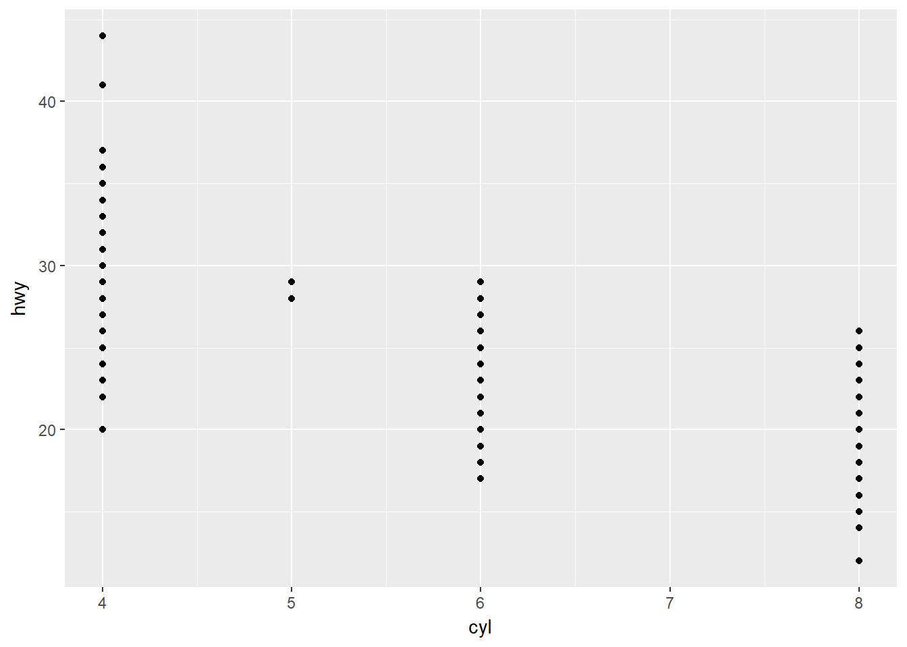
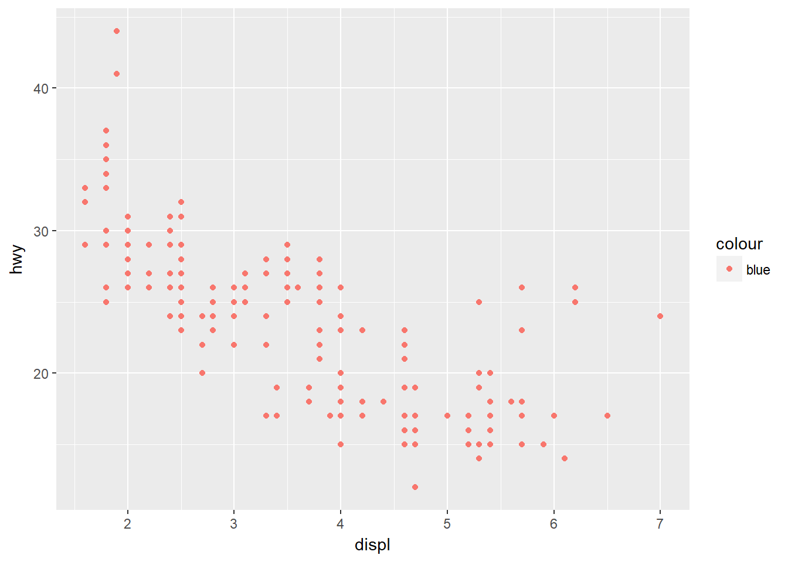
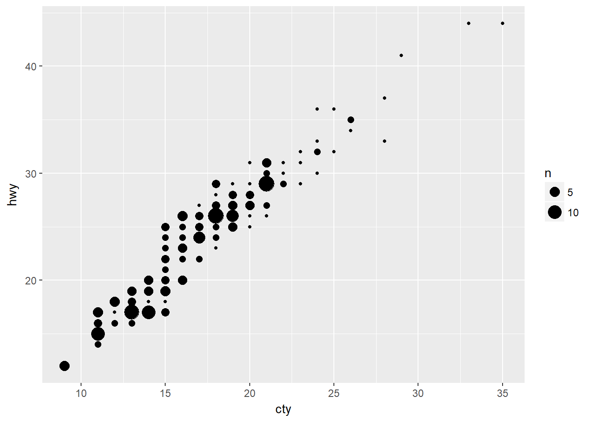

3 Data visualization
3.1 Introduction
No exercises.
3.2 First steps
3.2.1 Exercises
1 - Run ggplot(data = mpg). What do you see?
ggplot(data = mpg)
In this case, nothing is displayed because we have specified neither the mapping and geom.
2 - How many rows are in mpg? How many columns?
To get the dimensions of a data matrix, we can simply use the function ‘dim()’.
dim(mpg)## [1] 234 11The function returns a vector of values. The first element is the number of rows and the second element is the number of columns. For mpg, we have 234 rows and 11 columns.
Alternatively, we can use ‘nrow()’ and’ncol()’ to return the number of rows and columns respectively.
nrow(mpg)## [1] 234ncol(mpg)## [1] 113 - What does the drv variable describe? Read the help for ?mpg to find out.
f = front-wheel drive r = rear wheel drive 4 = 4wd
4 -Make a scatterplot of hwy vs cyl.
ggplot(data = mpg) +
geom_point(mapping = aes(x = cyl, y = hwy))
5 - What happens if you make a scatterplot of class vs drv? Why is the plot not useful?
ggplot(data = mpg) +
geom_point(mapping = aes(x = drv, y = class))In this dataset, both class and drv are categorical variables. The only information this scatter plot reveals is what combinations of class and drv exist in the dataset. For example, there are front-wheel drive compact vehicles, but not front-wheel drive 2 seaters.
3.3 Aesthetic mappings
3.3.1 Exercises
1 - What’s gone wrong with this code? Why are the points not blue?
ggplot(data = mpg) +
geom_point(mapping = aes(x = displ, y = hwy, color = "blue"))
In order to manually change the color of every point to blue, color = "blue" should be placed outside the aes() argument.
ggplot(data = mpg) +
geom_point(mapping = aes(x = displ, y = hwy), color = "blue")2 - Which variables in mpg are categorical? Which variables are continuous? (Hint: type ?mpg to read the documentation for the dataset). How can you see this information when you run mpg?
We can type ?mpg and deduce which variables are categorical and which are continuous based on the descriptions. Or we can use str() to get the types of the variables.
str(mpg)## Classes 'tbl_df', 'tbl' and 'data.frame': 234 obs. of 11 variables:
## $ manufacturer: chr "audi" "audi" "audi" "audi" ...
## $ model : chr "a4" "a4" "a4" "a4" ...
## $ displ : num 1.8 1.8 2 2 2.8 2.8 3.1 1.8 1.8 2 ...
## $ year : int 1999 1999 2008 2008 1999 1999 2008 1999 1999 2008 ...
## $ cyl : int 4 4 4 4 6 6 6 4 4 4 ...
## $ trans : chr "auto(l5)" "manual(m5)" "manual(m6)" "auto(av)" ...
## $ drv : chr "f" "f" "f" "f" ...
## $ cty : int 18 21 20 21 16 18 18 18 16 20 ...
## $ hwy : int 29 29 31 30 26 26 27 26 25 28 ...
## $ fl : chr "p" "p" "p" "p" ...
## $ class : chr "compact" "compact" "compact" "compact" ...manufacturer, model, trans, drv, fl, and class are chr variables, which also mean that they are categorical variables.
3 - Map a continuous variable to color, size, and shape. How do these aesthetics behave differently for categorical vs. continuous variables?
When mapping a continuous variable, displ, to color, ggplot creats a gradient color scale to represent the values of the continous variable. By default, ggplot creates a color gradient scale from light blue to dark blue, where light blue reresents lower values and dark blue represents higher values.
ggplot(data = mpg) +
geom_point(mapping = aes(x = displ, y = hwy, color = displ))Similiarly, when mapping a continuous variable to shape, ggplot displays larger values with circles with larger area.
ggplot(data = mpg) +
geom_point(mapping = aes(x = displ, y = hwy, size = displ))However, ggplot with throw out an error message if we map a continuous variable to shape.
4 - What happens if you map the same variable to multiple aesthetics?
We can map the same variable to multiple aesthetics, as long as the aesethetics are compatiable with the type of the variables (categorical/continuous). For example, we can map drv, which is a categorical variable, to both color and shape.
ggplot(data = mpg) +
geom_point(mapping = aes(x = displ, y = hwy, color = drv, shape = drv))Here, we map a continuous variable, displ, to color and size.
ggplot(data = mpg) +
geom_point(mapping = aes(x = displ, y = hwy, color = displ, size = displ))5 - What does the stroke aesthetic do? What shapes does it work with? (Hint: use ?geom_point)
stroke only works with shapes 21 - 24, which also comes with the fill argument, which controls the color of the fill. size argument controls the size of the fill part, stroke controls the size of the stroke, and color contools the color of the stroke. For example:
ggplot(data = mpg) +
geom_point(mapping = aes(x = displ, y = hwy), shape = 21,
fill = 'red', size = 4, stroke = 3, color = 'white')6 - What happens if you map an aesthetic to something other than a variable name, like aes(colour = displ < 5)?
ggplot(data = mpg) +
geom_point(mapping = aes(x = displ, y = hwy, color = displ < 5))
As shown in the above scatter plots, ggplot evaluates displ < 5 and creates a temporary boolean variable indicating whether the observations satisfy the specified condition, and represents TRUE and FALSE with different colors.
3.4 Common problems
No exercises.
3.5 Facets
3.5.1 Exercises
1 - What happens if you facet on a continuous variable?
ggplot(data = mpg) +
geom_point(mapping = aes(x = displ, y = hwy)) +
facet_wrap(~ cty, nrow = 2)
Using facet_wrap() with a continuous variable will work in general, however, it might not be as useful as faceting on a categorical variable with a few levels. The above plot shows hwy vs disp scatter plots facetted by cty. What it does is first converting the continuous variable to a factor, then displays separate plots for each unique value.
ggplot(data = mpg) +
geom_point(mapping = aes(x = displ, y = hwy)) +
facet_grid(cty ~ year)Similarly, facet_grid() works with continuous variables as well.
2 - What do the empty cells in plot with facet_grid(drv ~ cyl) mean? How do they relate to this plot?
A plot with facet_grid(drv ~ cyl):
ggplot(data = mpg) +
geom_point(mapping = aes(x = displ, y= hwy)) +
facet_grid(drv ~ cyl)Compared with the plot below:
ggplot(data = mpg) +
geom_point(mapping = aes(x = drv, y = cyl))
The empty grids in facet_grid(drv ~ cyl) tell us that there are no observations in those particular combinations of cyl and drv. The above scatter plot of cyl vs drv gives us the same information.
3 - What plots does the following code make? What does . do?
In facet_grid(), rows are facetted by the variable on the left hand side of ~, and columns are facetted by the variable on the right hand side of ~. A . simply means that there will be no facetting in the dimension.
ggplot(data = mpg) +
geom_point(mapping = aes(x = displ, y = hwy)) +
facet_grid(drv ~ .)
facet_grid(drv ~ . ) - rows are facetted by drv, and no facetting by columns
ggplot(data = mpg) +
geom_point(mapping = aes(x = displ, y = hwy)) +
facet_grid(. ~ cyl)
facet_grid(. ~ cyl) - columns are facetted by cyl, and no facetting by rows.
4 - Take the first faceted plot in this section:
ggplot(data = mpg) +
geom_point(mapping = aes(x = displ, y = hwy)) +
facet_wrap(~ class, nrow = 2)What are the advantages to using faceting instead of the colour aesthetic? What are the disadvantages? How might the balance change if you had a larger dataset?

One of the advantages of using facetting instead of coloring is to avoid the possible confusion caused by having several distinct colors shown on the same plot. As the number of unique levels in the mapping categorical increases, it can be difficulty to distinguish between the differnet colors.
A possible disadvantage in using facetting is that since the points are on separate plots, direct comparisons might not be as straightforward.
5 - Read ?facet_wrap. What does nrow do? What does ncol do? What other options control the layout of the individual panels? Why doesn’t facet_grid() have nrow and ncol argument?
In facet_wrap(), nrow and ncol defines the number of rows and columns of the panels. facet_grid() does not have nrow and ncol since the number of rows and columns are equal to the number of unique levels in the row/column variables.
6 - When using facet_grid() you should usually put the variable with more unique levels in the columns. Why?
One logical reason is that since the dependent variables are usually plotted on the y-axis, it is much easier to compare the highs and lows and the trends of the variables if the plots are placed side by side.
3.6 Geometric objects
3.6.1 Exercises
1 - What geom would you use to draw a line chart? A boxplot? A histogram? An area chart?
geom_line(), geom_boxplot(), geom_histogram(), and geom_area().
2 - Run this code in your head and predict what the output will look like. Then, run the code in R and check your predictions.
ggplot(data = mpg, mapping = aes(x = displ, y = hwy, color = drv)) +
geom_point() +
geom_smooth(se = FALSE)## `geom_smooth()` using method = 'loess'Note: Since the mapping is defined in ggplot(), it is carried over and applied to both geom_point() and geom_smooth().
3 - What does show.legend = FALSE do? What happens if you remove it? Why do you think I used it earlier in the chapter?
show.legend = FALSE hides the legned that is automatically created when we map a variable to an aesthetic, like ‘color’ or ‘size’. Since the default is TRUE, removing this argument will always result in the legend being displayed if there are variables mapped to the asethetics. The last part of the question refers to this code:
ggplot(data = mpg) +
geom_smooth(
mapping = aes(x = displ, y = hwy, color = drv),
show.legend = FALSE
)## `geom_smooth()` using method = 'loess'Not exactly sure why, other than intentionally hiding the legend.
4 - What does the se argument to geom_smooth() do?
The se argument controls whether the confidence interval around the smooth curve is shown. The default value is TRUE and the default level of CI is .95. The level of CI can be changed via the level argument.
5 - Will these two graphs look different? Why/why not?
ggplot(data = mpg, mapping = aes(x = displ, y = hwy)) +
geom_point() +
geom_smooth()
ggplot() +
geom_point(data = mpg, mapping = aes(x = displ, y = hwy)) +
geom_smooth(data = mpg, mapping = aes(x = displ, y = hwy))The two graphs will look exactly the same. In the first code, data and mapping are both defined in ggplot() and are carried over to the geoms. In the second code, data and mapping are defined individually in each geom.
6 - Recreate the R code necessary to generate the following graphs.
The codes to recreate the 6 plots are shown below. (Note - not sure about the sizes so the size argument was skipped.)
ggplot(data = mpg, mapping = aes(y = hwy, x = displ)) +
geom_point() +
geom_smooth(se = FALSE)## `geom_smooth()` using method = 'loess'ggplot(data = mpg, mapping = aes(y = hwy, x = displ)) +
geom_point() +
geom_smooth(mapping = aes(group = drv), se = FALSE, show.legend = FALSE)## `geom_smooth()` using method = 'loess'ggplot(data = mpg, mapping = aes(y = hwy, x = displ)) +
geom_point(mapping = aes(color = drv)) +
geom_smooth(mapping = aes(color = drv, group = drv), se = FALSE)## `geom_smooth()` using method = 'loess'
ggplot(data = mpg, mapping = aes(y = hwy, x = displ)) +
geom_point(mapping = aes(color = drv)) +
geom_smooth(se = FALSE)## `geom_smooth()` using method = 'loess'ggplot(data = mpg, mapping = aes(y = hwy, x = displ)) +
geom_point(mapping = aes(color = drv)) +
geom_smooth(mapping = aes(linetype = drv), se = FALSE)## `geom_smooth()` using method = 'loess'ggplot(data = mpg, mapping = aes(y = hwy, x = displ)) +
geom_point(mapping = aes(fill = drv), color = 'white', stroke = 2, shape = 21)3.7 Statistical transformations
3.7.1 Exercises
1 - What is the default geom associated with stat_summary()? How could you rewrite the previous plot to use that geom function instead of the stat function?
The default geom for stat_summary() is geom_pointrange(). However, the default stat for geom_pointrage() is stat_identity(), meaning that the medians, mins and maxes must be computed first. The plot can be recreated with the following code:
diamonds %>% group_by(cut) %>% summarize(median_y = median(depth),
min_y = min(depth),
max_y = max(depth)) %>%
ggplot() +
geom_pointrange(mapping = aes(x = cut, y = median_y, ymin = min_y, ymax = max_y)) +
labs(y = 'depth')
2 - What does geom_col() do? How is it different to geom_bar()?
Both geom_col() and geom_bar() create bar charts. The major difference is that for geom_bar(), the default stat is stat_count(). It performs statistical transformation by counting the frequencies in each group and then makes the height of the bars proportional to the frequencies. For example:
ggplot(data = diamonds) +
geom_bar(aes(x = cut))
Whereas for geom_col(), the default stat is geom_identity(). The heights of the bars represent the values in the data. To recreate the above bar chart using geom_col(), we must first calculate the frequncies manually:
diamonds %>% group_by(cut) %>% summarise(count = n()) %>%
ggplot() +
geom_col(mapping = aes(x = cut, y = count))
3 - Most geoms and stats come in pairs that are almost always used in concert. Read through the documentation and make a list of all the pairs. What do they have in common?
The complete list of geoms and stats can be found in the documentation.
4 - What variables does stat_smooth() compute? What parameters control its behaviour?
The method argument defines the smoothing method and the variables to compute. The arguments n, span, fullrange, and level controls its behaviour.
5 - In our proportion bar chart, we need to set group = 1. Why? In other words what is the problem with these two graphs?
By default, geom_bar() counts the number of occurances in each level of the variable. However, if we want to display the proportions instead of counts, geom_bar() will treat the groups of the variable separately. Since all diamonds in ‘Fair’ are ‘Fair’, and all diamonds in ‘Ideal’ are ‘Idea’, etc., the proportions will always sum up to 1 for each group by default.
ggplot(data = diamonds) +
geom_bar(mapping = aes(x = cut, y = ..prop..))
To override this behavior and actually show the correct proportions relatively to the overall counts, we can specify group = 1:
ggplot(data = diamonds) +
geom_bar(mapping = aes(x = cut, y = ..prop.., group = 1))
Similarly in the second plot, geom_bar first separates the cut levels, then looks each color in each level indiviudally. Since all color ‘D’ in ‘Fair’ are color ‘D’, and all color ‘E’ in ‘Good’ are color ‘E’, etc., the proportion for each color in each cut level is always 1. There are 7 colors in each cut level, so the proportions all sum up to 7.
ggplot(data = diamonds) +
geom_bar(mapping = aes(x = cut, fill = color, y = ..prop..))
To override this behavior, this time we can include group = color.
ggplot(data = diamonds) +
geom_bar(mapping = aes(x = cut, fill = color, y = ..prop.., group = color))Note that although visually it looks correct, the proportions are still only relatively to the respective colors. For example, the sum of the proportions of color ‘D’ is 1, and since there are 7 colors, the sum of the total height of the 5 bars is 7. Again to remedy this, instead of a stacked bar chart, we can modify the position argument to dodge:
ggplot(data = diamonds) +
geom_bar(mapping = aes(x = cut, fill = color, y = ..prop.., group = color),
position = 'dodge')3.8 Position adjustments
3.8.1 Exercises
1 - What is the problem with this plot? How could you improve it?
ggplot(data = mpg, mapping = aes(x = cty, y = hwy)) +
geom_point()
The problem with this plot is that since there are many observations with the same values of cty and hwy, many data points overlap with each other and it fails to show where the mass of the data is. We can use geom_jitter() instead:
ggplot(data = mpg, mapping = aes(x = cty, y = hwy)) +
geom_jitter()geom_jitter is able to display where the data points are concentrated by sacrificing a little bit of statistically accuracy.
2 - What parameters to `geom_jitter() control the amount of jittering?
The amount of jittering can be controlled by arguments width and height in geom_jitter().
3 - Compare and contrast geom_jitter() with geom_count()
Both geom_jitter() and geom_count() can better represent the data when there are many overlapping points and show where the mass of the data is. geom_jitter() achieves this by slightly moving the overlapping points vertically and horizontally, sacrificing statistical accuracy while being more clearly in showing the overlapping points. geom_count() counts the overlapping points, and maps the counts to the size of the points instead.
ggplot(data = mpg, mapping = aes(x = cty, y = hwy)) +
geom_count()
4 - What’s the default position adjustment for geom_boxplot()? Create a visualisation of the mpg dataset that demonstrates it.
The default positional adjustment is dodge.
ggplot(data = mpg) +
geom_boxplot(mapping = aes(y = displ, x = drv, color = factor(year)))3.9 Coordinate systems
3.9.1 Exercises
1 - Turn a stacked bar chart into a pie chart using coord_polar()
Using the previous example in the chapter:
ggplot(data = diamonds) +
geom_bar(mapping = aes(x = cut, fill = clarity)) +
coord_polar()In the above chart, the pies are angled by the x variable (cut). We can angle the pies by the y variable using the arguement theta:
ggplot(data = diamonds) +
geom_bar(mapping = aes(x = cut, fill = clarity)) +
coord_polar(theta = "y")2 - What does labs() do? Read the documentation.
labs() allows us to modify ploy title, subtitle, axis title, and legend title.
3 - What’s the difference between coord_quickmap() and coord_map()?
Type ?coord_map, or read the description in the reference.
4 - What does the plot below tell you about the relationship between city and highway mpg? Why is coord_fixed() important? What does geom_abline() do?
ggplot(data = mpg, mapping = aes(x = cty, y = hwy)) +
geom_point() +
geom_abline() +
coord_fixed()The plot shows us that there is a positive linear trend between hwy and cty, and the slope is approximately close 1, meaning that a unit increase in cty is associated with a unit increase in hwy.
coord_fixed forces a specified aspect ratio between the physical representation of the units on the axes. The ratio is 1 by default. It is important to fix the aspect ratio in this case because hwy and cty are measured in the same unit (miles per gallon). Any other aspect ratios will give a visually incorrect representation and might lead us to believe that one increasese at a faster rate than the other.
geom_abline() adds a diagonal reference line to the plot, thus allows us the confidence earlier that the relationship is positively linear and the slope is close to 1.
3.10 The layered grammar of graphics
No exercises